查过的词，
带着原句留下来
词镜 Lens 是 Windows 上的本地查词软件。在任何程序里选中一个词，十几部词典的释义一起弹出来；这个词所在的句子、出自哪里，也一起记进生词本。
The old was quieter than she remembered. Gulls still above the , but the fishing boats had to a handful, their paint in the salt wind. She had come back meaning to stay a week; standing on the stones, she began to it would be longer.
查一个词，要复制、切窗口、粘贴，查完再切回来
在哪里读，就在哪里查
浏览器、PDF、Word、邮件里选中一个词，按快捷键或连按两次 Ctrl+C，查词小窗就在旁边弹出。Lens 同时把这个词所在的整句、来自哪个程序哪个网页一起抓下来。
了解划词取词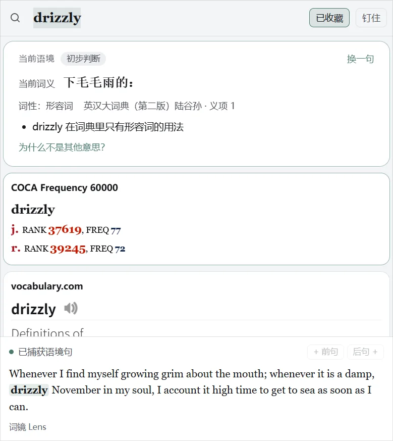
一本词典不够用，几本词典来回翻
十几部词典，一屏看完
导入你自己的 MDict、StarDict 词典，查一次全部出结果，原样保留每部词典的排版、配色和发音。卡片墙按内容长短铺满窗口；上方的义项图谱把几部词典的义项对齐，一眼看出哪个意思是共识。
了解多词典查词
词典里十几个义项，不知道句子里用的是哪一个
把句子一起查，直接告诉你是哪个意思
划词时带着原句，或者把整句粘进搜索框、在句子上点词。「当前语境」根据句子结构、搭配和几部词典的义项判断词义，列出依据和把握程度。完全在本机计算，不调用 AI，不花钱。
了解当前语境
想读英文原著，又怕生词太多读不下去
打开一本书，生词先替你标好
把 epub 电子书、文章放进 Lens。按你的词汇量把生词标在正文上，右栏列出全章生词和中文释义；点一个词就在右栏查，查过的词自动带着原句收进生词本。还有书签，读到哪里自动记住。
了解阅读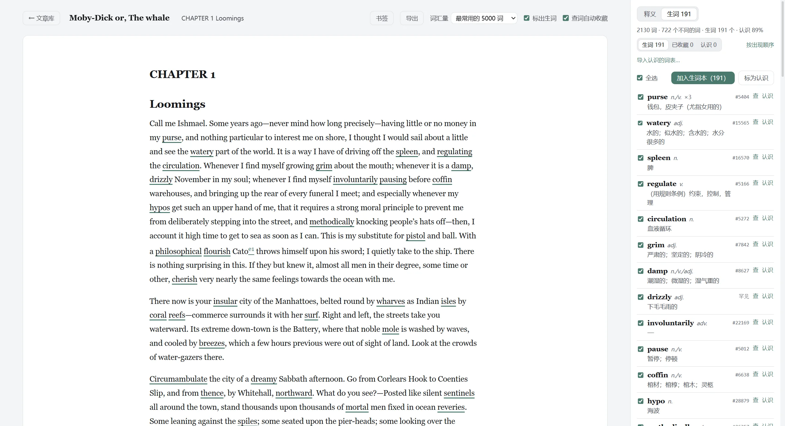
大部头读到一半就放下了
读之前，先拿到一本「预习包」
一键把整本书的生词连同书中原句做成 PDF：阅读路线表告诉你每章多长、多难；词表按章节排，边读边背。愿意用 AI 的话，还能生成精读本：一句话主旨、哪几章值得读原文、AI 自选的图解、逐章复述、名场面原文和译文、对话准备和自测题，读完能跟人聊这本书。
了解全书预习包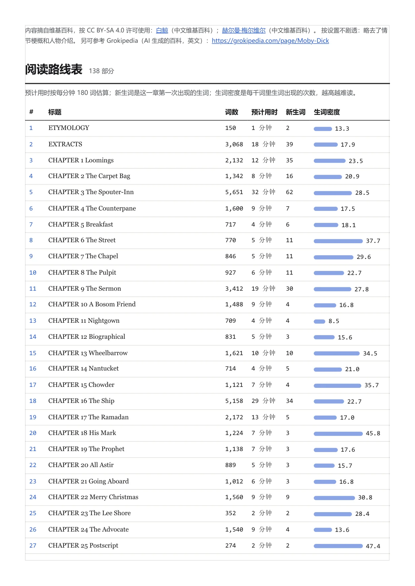
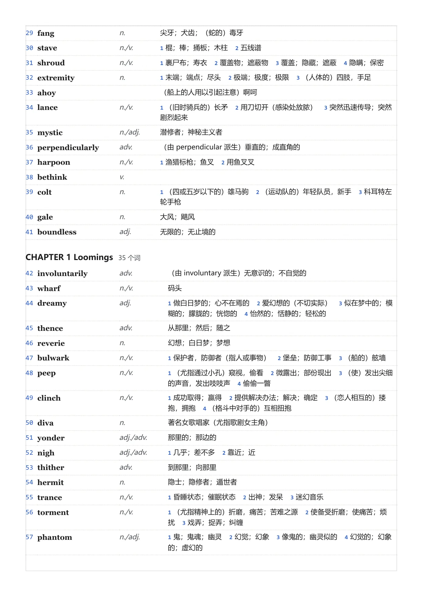
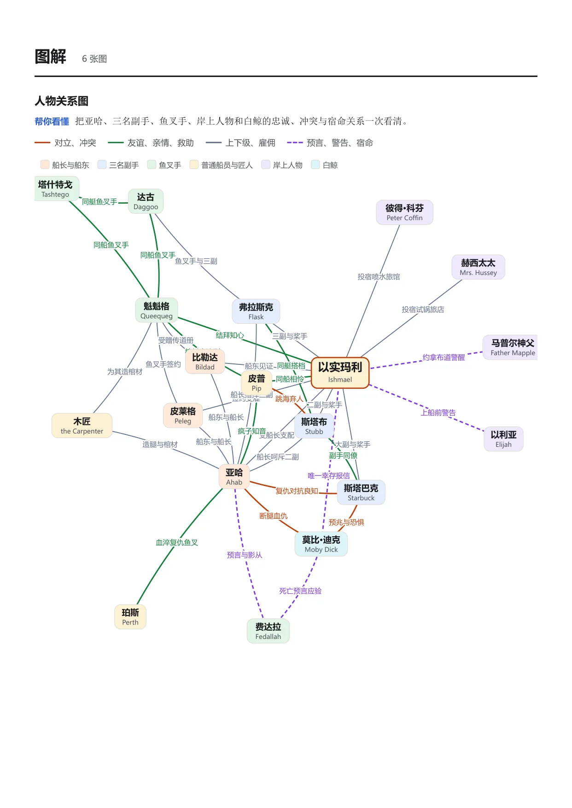
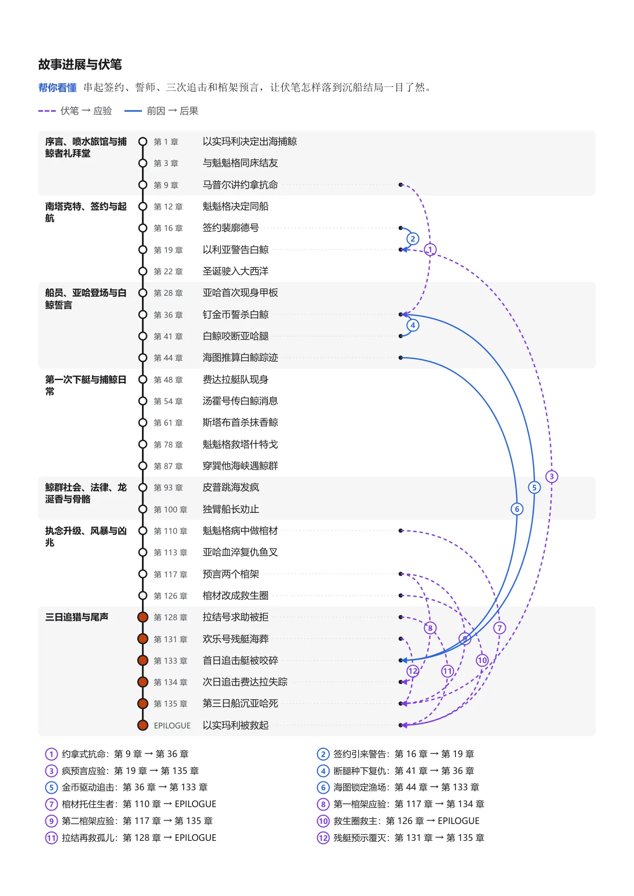
《白鲸》实测：常用 1.2 万词以外的生词约 2000 个；精读本用 DeepSeek 生成约 2 元人民币、十几分钟。
背单词背完就忘，也想不起是在哪儿见过
生词本里的每个词，都带着你读到它的那句话
语境卡正面是你当时读到的句子，翻面看释义。按 FSRS 间隔重复安排复习；也能一键导出 Anki 牌组，自带识记卡和挖空语境卡，发音取自你的词典。
了解生词本与复习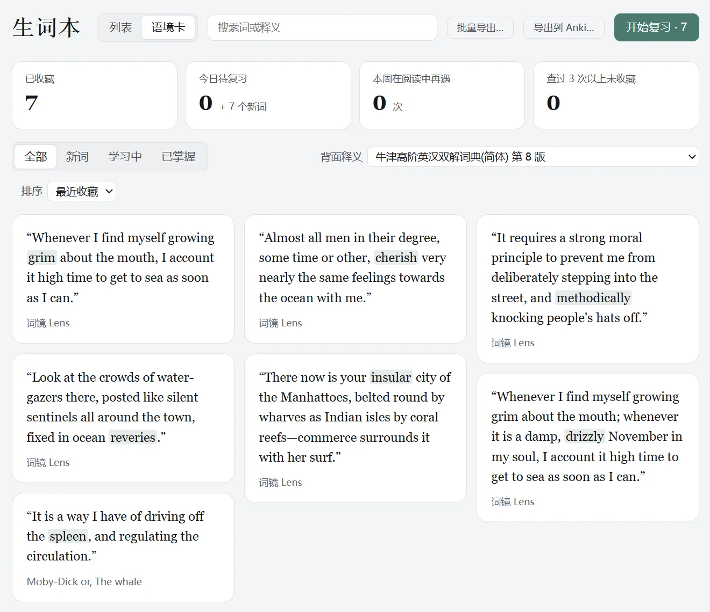
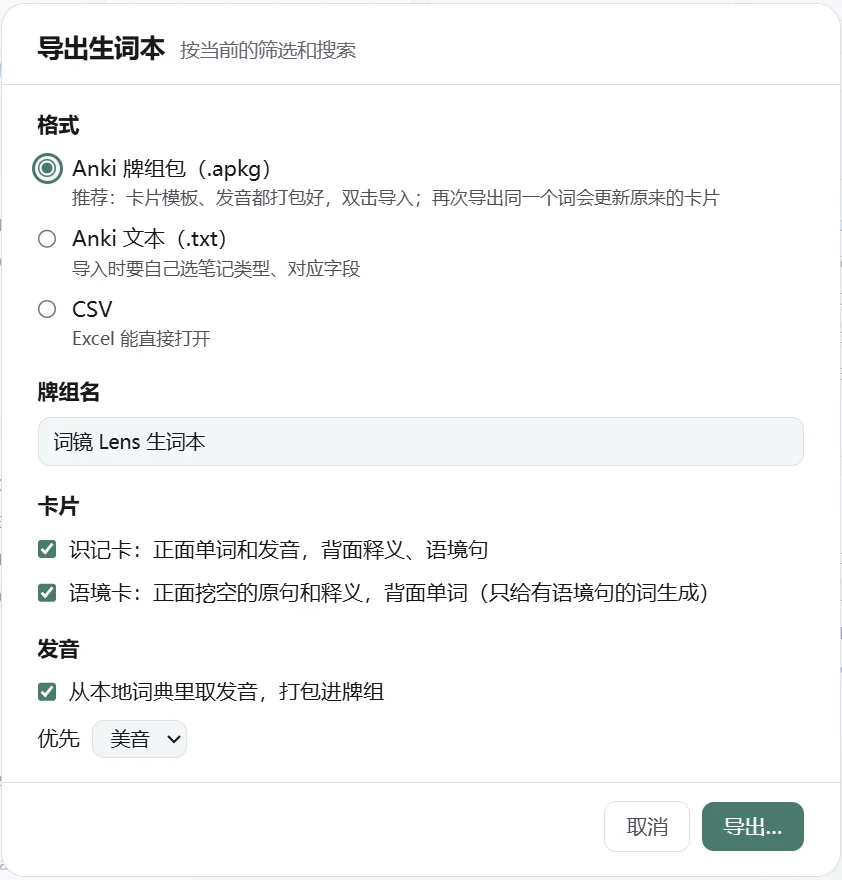
还有这些
细节里的好用
每一项都在对应的功能页里有详细说明。
15 套主题
同一个词，换一种心情看
亮色 10 套、暗色 5 套，其中三套连版式都会变；还可以自己调色、导入导出主题。下面是同一个词 lens 在不同主题下的样子。
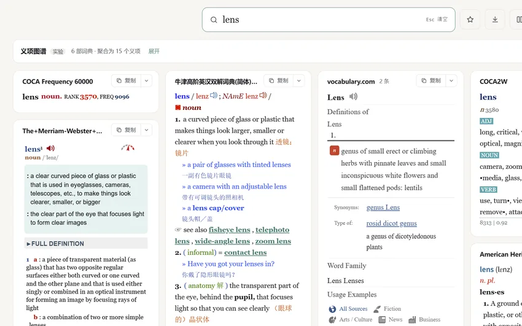
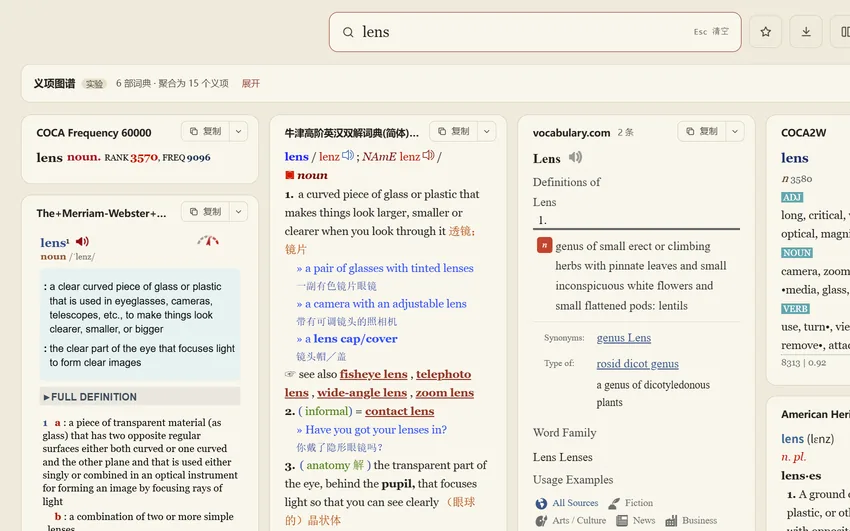
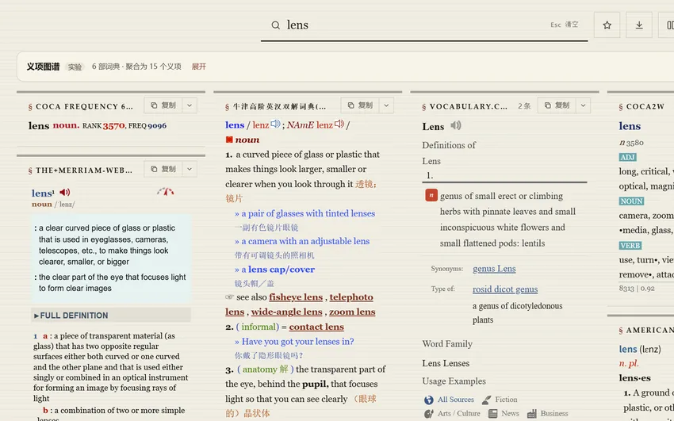
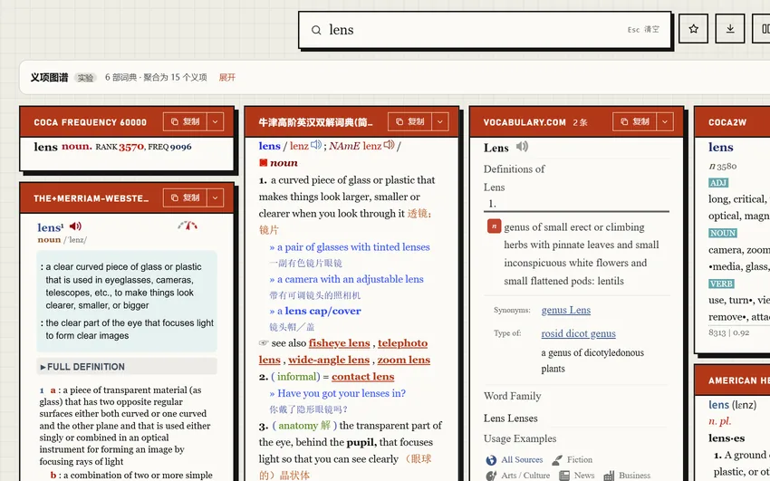
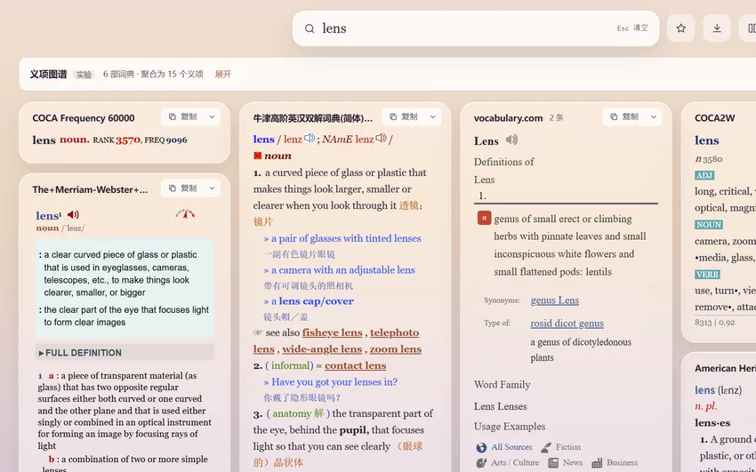
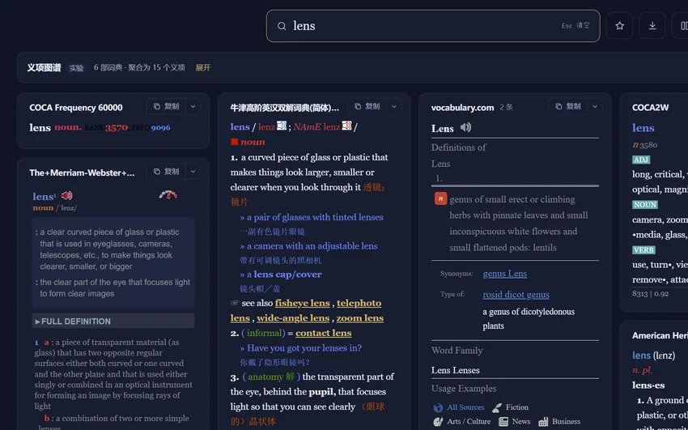
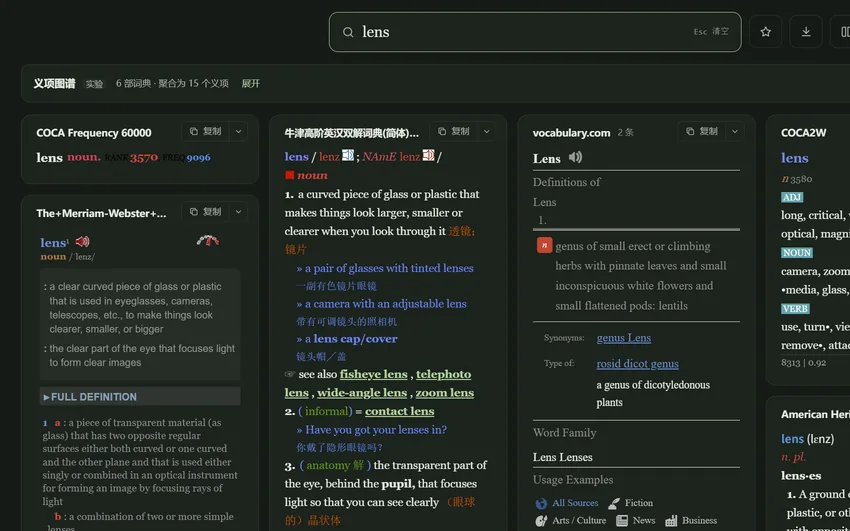
本地优先
你的词典，留在你的电脑上
Lens 不附带任何词典，你导入自己的词典文件。查词、生词本、阅读都在本机完成，不联网也能用。
常见词典格式都能导入
MDict .mdx / .mdd
StarDict .ifo / .dict.dz
Lens JSON
十几部词典也是即时出结果
索引按需读取，不把整部词典装进内存。词典自带的排版、字体、发音和脚本原样保留。
联网的功能都可以关掉
只有在线词典、网络例句、AI 功能和检查更新会联网。AI 用你自己的 API Key，不填也不影响其他功能。
下载
免费下载，选一个版本
常见问题
下载之前
真的免费吗？
免费，代码按 MIT 许可开源。只有 AI 功能（AI 例句、AI 导读、精读本）要用你自己的 Claude 或 DeepSeek API Key，按服务商的用量计费；不用 AI 时其他功能都不受影响。
Lens 自带词典吗？去哪里找词典？
不带。词典有版权，Lens 只负责读。你可以导入自己合法获得的 MDict（.mdx/.mdd）或 StarDict 词典；没有词典时，内置的 WordNet 和词频表也能提供词性、近义词和生词判断。
支持 Mac 或手机吗？
目前只有 Windows 版。划词取词用到了 Windows 的 UI Automation，暂时没有其他平台的版本。
为什么 Windows 提示「已保护你的电脑」？
安装包没有购买代码签名证书，Windows 对没签名的新程序都会这样提示，不代表有问题。点「更多信息 › 仍要运行」即可。代码全部公开在 GitHub，可以自己检查或构建。
我的数据存在哪里？会上传吗？
安装版存在本机的 %APPDATA%\Lens，便携版存在程序旁的 data 文件夹。不会上传生词本和阅读内容；用 AI 功能时只发送生成所需的最少内容，详见数据与隐私。
和别的查词软件比有什么不同？
Lens 的重点是「语境」：划词时自动抓原句、离线判断句中词义、生词本按原句复习、读原著前先做预习包。它也是本地软件，十几部词典同查不卡，数据都在自己电脑上。